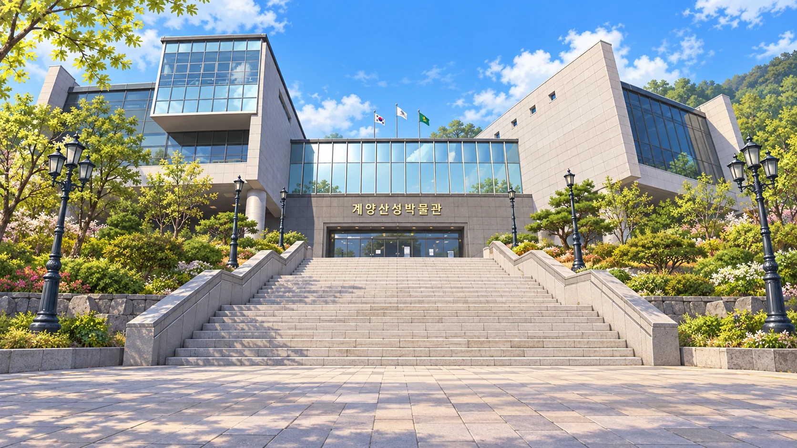
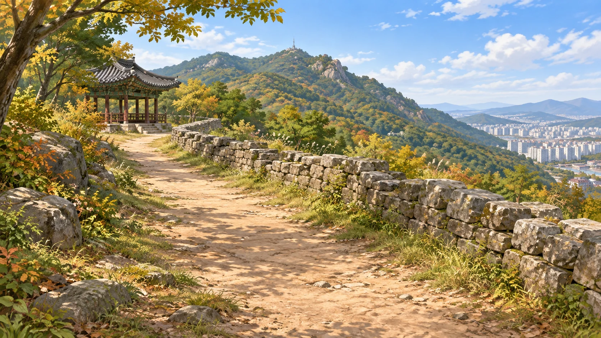
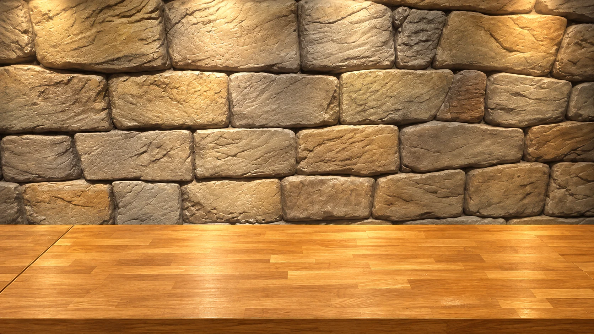
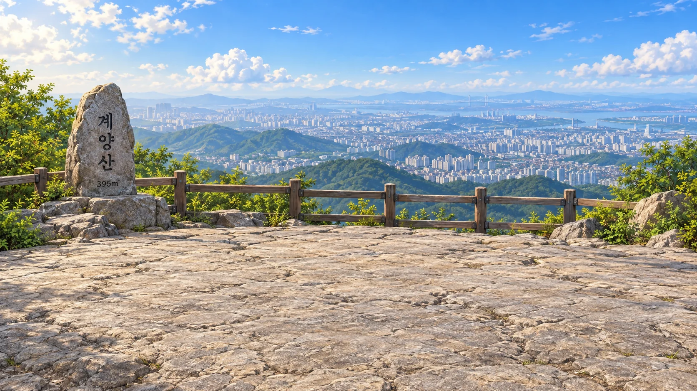

천천히 보고, 하나씩 발견해요
이곳을 살펴봐요

계양산성박물관 · 계양산계양산성박물관에서 정상까지
두 가지 발견을 잇는 수학 여행



잠시만 기다려 주세요.
민우와 서연이 매스투어 버스에 오릅니다.
계양산성박물관 → 계양산성 → 계양산 정상
민우와 서연은 수학의 빛을 품고 다시 버스에 올랐어요.

굽은 모양을 살피고 조각을 돌려
하나의 입체를 완성했어요.

4초와 6초의 리듬이 만나는
12초마다 같은 순간이 돌아와요.